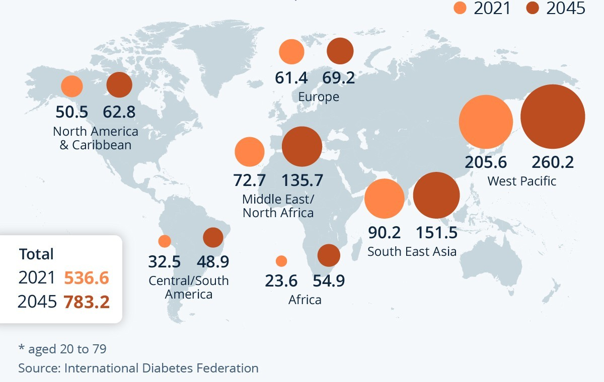
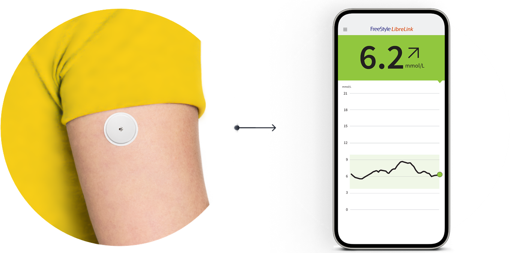
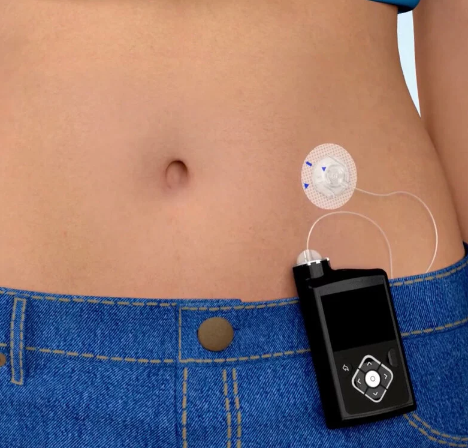
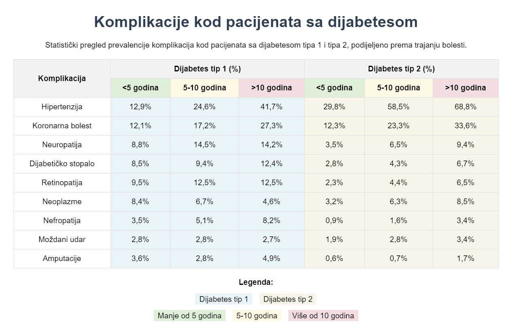

Dijabetes je hronična bolest koja utiče na način na koji tijelo reguliše nivo šećera u krvi. Postoji nekoliko vrsta dijabetesa, ali svi oni imaju zajedničku osobinu - probleme sa proizvodnjom ili korišćenjem insulina, hormona koji reguliše nivo glukoze u krvi.
Dijabetes tipa 1
Dijabetes tipa 1 nastaje kada imunološki sistem greškom napadne ćelije gušterače koje proizvode insulin. Kao rezultat, telo ne može regulisati nivo šećera u krvi, što može dovesti do ozbiljnih komplikacija.
Simptomi dijabetesa tipa 1:
Pojačana žeđ i učestalo mokrenje
Neobjašnjiv gubitak težine
Stalni umor i iscrpljenost
Zamagljen vid
Povećana glad
Dijabetes tipa 1 se ne može sprečiti, ali se može držati pod kontrolom uz redovno unošenje insulina, pravilnu ishranu i praćenje nivoa šećera u krvi.
Dijabetes tipa 2
Dijabetes tipa 2 je najčešći oblik dijabetesa i javlja se kada telo ne koristi insulin efikasno. Ovaj tip dijabetesa često je povezan sa nezdravim načinom života, uključujući lošu ishranu, fizičku neaktivnost i gojaznost.
Simptomi dijabetesa tipa 2:
Umor i iscrpljenost
Pojačana žeđ i učestalo mokrenje
Spora zarastanja rana
Zamagljen vid
Trnci u rukama i nogama
Dijabetes tipa 2 se može sprečiti ili odložiti zdravom ishranom, redovnom fizičkom aktivnošću i održavanjem zdrave telesne težine.
Liječenje dijabetesa
Tip 1
Svakodnevne injekcije inzulina
Inzulinske pumpe
Kontinuirano praćenje glukoze
Tip 2
Promjene načina života
Oralni lijekovi
Inzulin u naprednim stadijima
Gestacijski dijabetes
Gestacijski dijabetes se javlja tokom trudnoće i obično nestaje nakon porođaja. Ipak, žene koje su imale ovaj tip dijabetesa imaju veći rizik da kasnije razviju dijabetes tipa 2.
Registar obolelih od dijabetesa tipa 1
Na Unsko-sanskom kantonu formiran je registar obolelih od dijabetesa tipa 1. Ovaj registar omogućava prikupljanje podataka o starosnoj strukturi pacijenata i pomaže u planiranju zdravstvene zaštite i obezbeđivanju potrebnih medicinskih sredstava. Svi lični podaci pacijenata su zaštićeni, a registar služi isključivo u svrhu poboljšanja zdravstvenog sistema.
Dijabetes: Od historije do modernih terapija
Drevne civilizacije i dijabetes
U drevnoj Indiji (400. p.n.e), liječnici iz škole Ayurveda opisuju "madumeha" (medeni urin),
prepoznajući da urin privlači mrave. U terapije su uključivali:
Korištenje gorkih trava (nimbu, jamuna)
Fizičke vježbe (yoga asane poput Dhanurasana)
Dietu baziranu na zelenim povrćima i ječmu
Aretaeus iz Kapadokije (2. vijek n.e)
"Život je kratak, neugodan i bolan, žeđ nezasitna, unos tekućine prekomjeran...
Ako se ne liječi brzo, pacijent umire u roku od nekoliko mjeseci."
Prvi detaljan klinički opis dijabetesa u djelu "O uzrocima i znacima akutnih i hroničnih bolesti"
Historija bolesti
Dijabetes je bolest čiji tragovi sežu duboko u prošlost. Prvi zapisi, zabilježeni još u 1552. p.n.e. u Ebersovom papirusu, ukazuju na simptome poput učestalog mokrenja i gubitka težine. Ovi raniji zapisi sugeriraju da su drevni Egipćani već bili svjesni ozbiljnosti poremećaja u regulaciji šećera u krvi.
Kasnije, grčki liječnici, posebno onaj iz Apameje, uveli su termin "dijabetes" – riječ izvedena iz grčkog jezika koja znači "prolaziti kroz", opisujući karakterističan simptom prekomjernog izlučivanja tekućine. Tijekom srednjeg vijeka, perzijski liječnik Avicenna u svom djelu "Kanun medicine" detaljno je opisao komplikacije dijabetesa, uključujući i probleme poput gangrene, što je doprinijelo razumijevanju bolesti i važnosti pravovremene intervencije.
Napredak kroz istraživanja
Pravi prekretnicu u liječenju dijabetesa predstavlja otkriće inzulina 1921. godine, kada je kanadski tim uspio izolirati inzulin iz pankreasa pasa. Ovo otkriće je spasilo živote, a tek 1922. godine, 14-godišnji pacijent Leonard Thompson je postao prvi čovjek tretiran insulinom. Nakon tog događaja, medicinska zajednica krenula je u intenzivna istraživanja koja su rezultirala razvojem novih terapija i naprednih tehnologija za praćenje bolesti.
U posljednjim desetljećima, istraživanja su se fokusirala na smanjenje komplikacija povezanih s dijabetesom. Danas se u kliničkim ispitivanjima testiraju terapije temeljene na stem ćelijama, što bi moglo omogućiti regeneraciju oštećenih tkiva, a istraživački timovi rade i na razvoju "pametnog inzulina" – formulacije koja se aktivira samo kada su potrebne određene količine inzulina u tijelu.

Moderni načini liječenja i kontrole
U današnje vrijeme, tehnologija igra ključnu ulogu u borbi protiv dijabetesa.
Digitalizacija i razvoj naprednih uređaja omogućili su precizniju kontrolu šećera u krvi.
Kontinuirano praćenje glukoze (CGM) danas je zlatni standard, a uređaji poput FreeStyle Libre3 i
Dexcom G7 omogućuju pacijentima da u realnom vremenu prate svoje vrijednosti glukoze,
što značajno smanjuje rizik od hipoglikemije.
Insulinske pumpe koriste sofisticirane algoritme kako bi automatski regulirale dozu inzulina.
Ove tehnologije ne samo da poboljšavaju kontrolu bolesti, već i omogućuju pacijentima veći stepen
autonomije u svakodnevnom životu, što direktno utječe na kvalitetu života.

Primjer CGM uređaja – kontinuirano praćenje glukoze

Primjer insulinske pumpe – automatska regulacija inzulina
Rast oboljelih od dijabetesa
Globalna prevalencija dijabetesa bilježi kontinuirani i alarmantan rast. Podaci pokazuju da se broj oboljelih značajno povećao od 1980. godine, a projekcije za 2045. godinu ukazuju na daljnji porast, što stavlja izazov pred zdravstvene sustave širom svijeta.
Osim što raste broj dijagnosticiranih slučajeva, sve su veći i izazovi u prevenciji komplikacija poput kardiovaskularnih bolesti, neuropatije i oštećenja bubrega. Stoga, edukacija pacijenata, pravovremeno otkrivanje i kontinuirano praćenje postaju ključni faktori u borbi protiv ove globalne epidemije.

Ključne mjere prevencije dijabetesa
Prevencija dijabetesa tip 2 uključuje niz dokazano efikasnih mjera. Održavanje zdrave tjelesne težine kroz uravnoteženu prehranu bogatu vlaknima (voće, povrće, cjeloviti žitarice) i smanjenjem unosa prerađene hrane je temeljno. Redovita fizička aktivnost (minimum 150 minuta tjedno) poboljšava osjetljivost na insulin. Izbjegavanje duhana i umjerena konzumacija alkohola smanjuju rizik. Redoviti liječnički pregledi sa kontrolom šećera u krvi omogućavaju rano otkrivanje predijabetesa. Stres menadžment i kvalitetan san također igraju važnu ulogu u održavanju metaboličkog zdravlja.